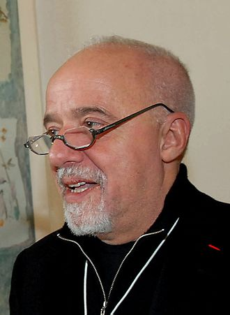

THE ALCHEMIST
REVIEW
The Alchemist is the story of a young shepherd who is guided by omens and the Soul of Nature, to reach his destiny and find the treasure in the Pyramids. The shepherd boy from the Spanish province of Andalusia had gone against the convention to realize his passion for traveling, even if it meant to become a shepherd. Among his routine, he meets with an old King who anchors the thought that the boy has a destiny to reach and a treasure to find. This is a metaphorical implication of the signs that we obtain from nature, in the form of many opportunities, which we fail to accept or follow. The King explains that the young boy has a treasure in the far-off pyramids of Egypt and he convinces him to leave the sheep and embark on a journey to get the treasure.
He does so by saying “Let’s just say that the most important thing is that you have succeeded in discovering your destiny. Destiny is what you always have wanted to accomplish. Everyone, when they are young, knows what their destiny is. At that point in their lives, everything is clear and everything is possible. They are not afraid to dream and to yearn for everything they would like to see happen to them in their lives. But, as time passes, a mysterious force begins to convince them that it will be impossible for them to realize their destiny”. He also mentions that when you want something, the whole universe conspires in helping you to achieve it. He gives the boy various examples by showing people who had given up on their destiny long ago and procrastinating it for the future, because of which they lose their fate altogether.
QUOTES
“It’s the possibility of having a dream come true that makes life interesting.”
“The simple things are also the most extraordinary things, and only the wise can see them.”
“Why do we have to listen to our hearts?” the boy asked. “Because, wherever your heart is, that is where you will find your treasure.”
- Paulo Coelho
Author
Paulo Coelho was born in Rio de Janeiro, Brazil, and attended a Jesuit school. At 17, Coelho's parents committed him to a mental institution from which he escaped three times before being released at the age of 20.[3][4] Coelho later remarked that "It wasn't that they wanted to hurt me, but they didn't know what to do... They did not do that to destroy me, they did that to save me."[5] At his parents' wishes, Coelho enrolled in law school and abandoned his dream of becoming a writer.